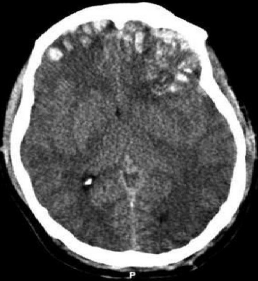

Ficha del catálogo
Contusión cerebral hemorrágica
- Sistema
- Nervioso
- Modalidad
- TC
- Región
- Polos temporales y regiones frontales basales
- Dificultad
- Básico
La contusión cerebral es una lesión traumática del parénquima superficial producida por el impacto del encéfalo contra las irregularidades óseas de la base del cráneo. Predomina en los polos temporales y en las regiones frontales basales, y tiende a crecer en las primeras horas, por lo que exige control de imagen.
Técnica
Tomografía de cráneo sin contraste con reconstrucciones en ventana de parénquima y de hueso, revisando también los cortes con ventana intermedia para detectar colecciones extraaxiales finas.
Qué observar
- Focos hiperdensos parcheados en corteza y sustancia blanca subcortical
- Localización característica en polos temporales y regiones frontales basales
- Halo hipodenso de edema alrededor de los focos hemorrágicos
- Lesiones en el lado opuesto al impacto por mecanismo de contragolpe
- Colecciones extraaxiales, fracturas y neumoencéfalo asociados
- Efecto de masa, borramiento de cisternas y desviación de línea media
Hallazgos
Aparecen focos hiperdensos de bordes mal definidos, con distribución parcheada, situados en la superficie del parénquima y rodeados de un halo hipodenso de edema. Es frecuente que sean múltiples y bilaterales y que coexistan con hematoma subdural o con hemorragia subaracnoidea traumática. En el control evolutivo suelen aumentar de tamaño y confluir, con incremento del edema y del efecto de masa.
Perlas
La tomografía inicial casi siempre subestima la lesión, porque las contusiones crecen durante las primeras horas y el control programado cambia con frecuencia la conducta. Ante una contusión frontal conviene buscar de forma dirigida su contraparte temporal en el lado opuesto, ya que el mecanismo de contragolpe las produce por pares.
Diagnóstico diferencial
- Hemorragia intracerebral primaria
- Colección homogénea y redondeada de localización profunda, sin distribución superficial ni antecedente traumático.
- Infarto hemorrágico
- Sigue un territorio arterial en cuña y la sangre aparece dentro de una zona previamente hipodensa.
- Metástasis hemorrágica
- Lesión nodular con realce y edema desproporcionado, sin contexto traumático agudo.
- Lesión axonal difusa hemorrágica
- Focos puntiformes profundos en unión corticosubcortical, cuerpo calloso y tronco, con clínica desproporcionada a la imagen.
Simuladores
- Artefacto de endurecimiento del haz junto a la base temporal
- Calcificaciones durales o de la hoz vistas de perfil
- Volumen parcial con el hueso frontal en cortes basales
Por modalidad
- TC
- Es la técnica inicial por su rapidez y por su capacidad de mostrar sangre, fractura y efecto de masa en el mismo estudio.
- RM
- Detecta contusiones no hemorrágicas y restos hemáticos antiguos, y es superior en la fase subaguda y en la valoración del pronóstico.
Protocolo
Tomografía sin contraste al ingreso y control programado en las primeras horas o ante cualquier deterioro clínico. Se debe describir número, localización, volumen aproximado, efecto de masa y estado de las cisternas de la base.
Clasificación
Errores frecuentes
- Considerar definitivo el estudio inicial y no programar control evolutivo
- No revisar la ventana ósea y pasar por alto fracturas asociadas
- Olvidar valorar las cisternas perimesencefálicas al describir el efecto de masa

contusión cerebral traumatismo craneoencefálico contragolpe polo temporal control evolutivo tomografía urgente